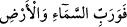

Şeyh Sa‘dî’nin dediği gibi:
Bulut, rüzgâr, ay, güneş ve felek her biri bir iştedir,
Ta ki sen bir ekmek kazanasın ve onu gafletle yemeyesin.
Hepsi senin için kendinden geçmiş ve emrine âmâdedir;
Artık insafa sığmaz ki sen ferman dinlemeyesin.
Veya bu âyetin mânâsı: “Semâda rızıklarınızın takdiri var” şeklindedir. İbn Keysan
buranın tefsîrini “Rızkınız, semânın Rabbine âiddir” şeklinde verip buna da “....ve sizi
hurma dallarına asacağım…” (Tâhâ 20/71) âyetindeki “fî” harfinin “alâ” anlamında
olduğunu delil getirmiştir.
Yine “vaadolunduğunuz azab ve mükâfât da (gökte) vardır.” Zira cennet, Sidre-i
Müntehâ’nın yakınında bulunan Arş’ın altındaki yedinci kat semânın üzerindedir. Veya
bu âyetten murad; vaadolunduğunuz hayır, şer, sevab, ikab, sıkıntı, ferahlık ve diğerleri
semâda yazılmış ve takdir edilmiş olarak mevcuddur. Tibyan’da kaydedildiğine göre,
bütün bunlar bir levhada yazılıdır ve dördüncü gökte bulunur.
Benim kanâatime göre bu âyetin tefsiri şöyledir: Allah’ın cezâlandırma emri de,
geçmiş kavimlerin başlarına gelen korkunç çığlık, taşlar, ateş ve tufan gibi cezâların
bizzat kendileri de de gökten inmiştir. Âyette vaadolunan iki şey, işte bunlardır.
23. Göğün ve yerin Rabbine andolsun ki bu vaad, sizin konuşmanız gibi kesin ve
gerçektir.
Sizin birbirinizle konuşmanız nasıl gerçekse, Allah’ın vaadettikleri de öyle gerçektir.
Buna kendi sözünüz gibi güvenebilirsiniz.
Allah Teâlâ’nın burada “göğün ve yerin Rabbine andolsun ki” şeklinde kendisinin
üzerine yemin ederken “Rab” kelimesini getirmesinin sebebi, bu kelime ile burada rızık
verme ve büyütme mânâsının kasdedilmek istenmesidir.
Vaadolunduğunuz şeyler veya bu âyetlerde zikredilen şeyler yahut istiâre yoluyla
(sizin için takdir olunan) rızık gerçektir.
Bir hadis-i şerifte şöyle buyrulmuştur: “Âdemoğlu, Rabbini tasdik etmekten uzak
durduğu için Allah Teâlâ kendisi üzerine kasem etmiş ve
buyurmuştur.”
Hasan Basri şöyle demiştir: Bana ulaştığına göre Rasûlullah (s.a.) “İnansınlar diye
Allah’ın kendisi üzerine yemin ettiği, fakat böyle bir yeminden sonra O’nu tasdik
etmeyen toplulukları Allah kahretsin!” buyurmuştur.[18]
Şâyet bir yahudi bile bir insana yiyecek vermek üzere vaadde bulunuyor, bu hususta